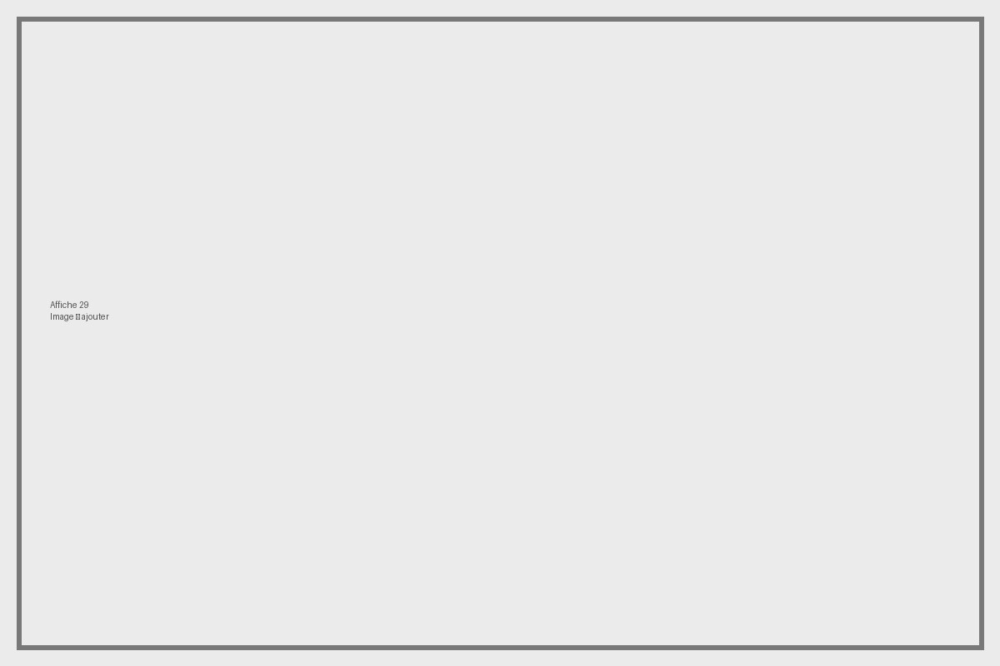

← Retour au mur
Affiche 29

Titre
НЕТ! (Niet)
Artiste
Albert ASLYAN
Date
1958
Texte / traduction
« NON ! ». The artist Al’bert Artemovich Aslian won a prize at the 1960 Venice biennale for this iconic 1958 anti-nuclear weapons poster, which would be reproduced in many forms over the years.